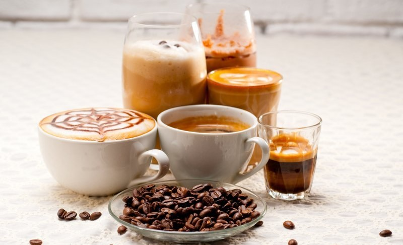

Виды кофе и кофейных напитков, их названия
Классификаций кофе существует очень много. Некоторые выделяют разновидности кофе по сорту зерен, другие повидам кофейных напитков.
Давайте рассмотрим обе классификации и разберемся, как различают кофе по степени обжарки, сорту зерен и какие разновидности кофейных напитков существуют.
Разновидности зерен кофе
Кофе — известный во всем мире напиток, который готовят из обжаренных зерен кофейных кустарников. Существует две базовые культуры кофейных кустарников, которые выращиваются в промышленном масштабе:
-
Арабика. Самый древний и самый распространенный вид кофейного дерева Coffea arabica.
Произрастает на юго-западном высокогорье Эфиопии, Южной и Центральной Америке.
Арабика считается самым
распространенным видом кофе — доля арабики в мировом производстве кофе составляет более 59%.
Кофе из высококачественных бобов арабики, должен иметь слегка сладковатый вкус с оттенком шоколада,
ореха или карамели. В некоторых сортах арабики
(их насчитывается более 50) можно уловить фруктово-ягодные ноты. Степень обжарки кофе, минеральный состав почвы, где выращивались кофейные плоды, влияет на вкус сваренного напитка. Большая часть кофе, представленная на полках в масс-маркете, — это арабика. Некоторые производители используют смесь арабики и второго по популярности вида кофе робусты. - Робуста. Кофе робуста — это обжаренные кофейные зерна кустарника из рода Coffea robusta. Робуста появилась в центральной и западной Африке. Это второй по популярности вид кофе, который занимает около 40% от мирового производства кофе. Вкус кофе робуста — горьковатый, с выраженным ароматом кофейных зерен и арахисовым послевкусием. Кофейные бобы робусты содержат больше кофеина и меньше сахара, в отличие от арабики, зерна которой насыщены маслами. Поэтому зерна робусты более крепкие и твердые. Кофе робуста чаще используют в кофейных смесях, чем в чистом виде. Особенно в смесях для эспрессо. Робуста добавляет глубину вкуса и придает густую пенку в готовом напитке.
Робуста и Арабика — два базовых вида кофе. Их смешение в различных пропорциях, создает неповторимые ароматы и вкусовые тона. Но не только от этого зависит вкус кофе, большую роль играет и степень обжарки зерен.
Степени обжарки кофе
Степень обжарки кофейных бобов — важный фактор, определяющих вкус напитка в чашке. Перед обжариванием зерна имеют слегка травянистый запах, и только после обжаривания зерна приобретают знакомый нам аромат кофе. Выделяют 3 степени обжарки зерен:
- Слабая (светлая) — зерна слегка обжаривают до бледно-желтого, светло-коричневого цвета. При слабой обжарке сохраняется большая часть кофеина из кофейных зерен, но практически не выделяются растительные масла. Готовый напиток будет обладать кисловатым вкусом и слабым кофейным ароматом.
- Средняя — наиболее востребованная и универсальная. Зерна при таком способе обжаривания выделяют растительные масла. Кофе имеет высокую крепость, яркий насыщенный аромат, а вкус отличается кисловатыми иореховыми тонами.
- Сильная (Темная) — при таком способе обжарки зерна приобретают темно-коричневый цвет, почти черный. В ходе процесса происходит максимальное выделение растительных масел. Вкус сваренного кофе получается терпким, горьким, а запах жженым. Такой напиток обладает высокой крепостью.
На основе видов зерен и степени обжарки готовят различные виды кофейных напитков.
Виды кофейных напитков
Кофейные напитки различают по способу приготовления и добавкам. В качестве основных ингредиентов для приготовления различных видов бодрящего напитка используют кофе и молоко. Изменяя пропорции и метод приготовления можно получить разнообразные вкусы напитка.:
Кофейные напитки на основе эспрессо
Эспрессо — любимый напиток в Италии, крепкий и бодрящий. Готовится из смеси арабики и робусты в кофемашине под давлением в 9 бар.
Настоящий эспрессо имеет плотную густую пенку, без вкраплений. Классический объем готового напитка — 25-35мл. На основе эспрессо готовят другие виды кофейных напитков:
- Доппио — двойной эспрессо. Порция 60 мл. Пить нужно горячим, после еды.
- Ристретто — эспрессо в меньшем объеме, 15-20 мл. Подают с бокалом воды, который выпивается после чашки кофе.
- Американо — эспрессо с водой. Горячая вода добавляется в эспрессо. Стандартный объем — 60 мл. Американо можно пить до и после обеда, добавлять молоко, сливки или сахар.
- Лунго — похож на американо, но вода добавляется вместе с кофейной массой. Вкус более горький. Готовится только в кофемашине. Объем — 50-60 мл.
- Кофе по-венски, или кон панна — десерт со взбитыми сливками. Горячий эспрессо сверху щедро поливают взбитыми сливками и украшают тертым шоколадом, карамелью или орехами.
- Романо, или эспрессо по-римски — традиционный эспрессо, но подается с долькой лимона. Пить рекомендуется после еды, без сахара и десерта.
- Коретто — эспрессо с алкоголем. Обычно к свежесваренному эспрессо добавляют ложку виски или коньяка, иногда граппы. Можно пить с медом или сахаром.
- Айриш — кофейный коктейль на основе эспрессо, виски и взбитых сливок. Подается в специальных айриш-бокалах, с трубочкой.
- Глясе — в классический эспрессо кладут шарик мороженого. Сверху иногда посыпают шоколадом или корицей.
Виды кофе с молоком и сливками
Кофе и молоко — два компонента, на основе которых можно получить вкуснейшие кофейные напитки. Один из самых популярных видов во всем мире — капучино.
- Капучино — кофе со взбитым молоком. Сначала готовится кофе, затем вспенивают молоко и добавляют к кофе, а сверху выкладывают пышную молочную пенку. Объем — 150 мл. Некоторые любят добавлять в капучино корицу, различные сиропы и карамель.
- Латте — более молочный, чем капучино. В эспрессо добавляется 2 порции вспененного молока, затем выкладывается пенка. Для приготовления используют арабику (сорт Мокко). Объем — 250 мл.
- Латте макиато — слоистый кофе. Кофе и молоко наливаются слоями, это придает красивый вид напитку. Подается в высоких айриш-бокалах вместе с соломинкой.
- Раф — кофейный коктейль на основе эспрессо, сливок и сахара или меда. Все ингредиенты тщательно взбиваются с помощью капучинатора или блендера. Имеет густую пышную пенку на поверхности.
- Флэт-уайт — к напитку доппио добавляют молоко. Флэт-уайт обладает мягким вкусом и хорошей крепостью
- Мокко — кофейный десерт, который готовится с помощью эспрессо, горячего молока и шоколада (иногда заменяют шоколадным сиропом). Часто сверху украшают пышной молочной пеной, усыпанной кусочками шоколада.
Это самые распространенные кофейные напитки на основе молока или сливок. Меняя пропорции в ту или другую сторону, можно получить новый вкус, а с помощью различных добавок в виде сиропов, корицы, шоколада, мяты можно совершенствовать вкус напитка.